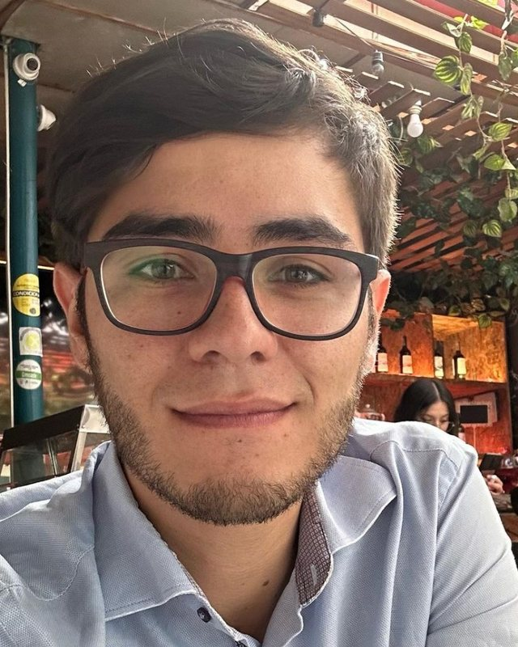

ETAPA 01
Desenganchar tu mente
Herramientas prácticas para frenar la rumiación y el sobrepensamiento sin desgastarte intentando suprimir lo que piensas.
Material práctico respaldado por la ciencia para seguir trabajando entre sesiones. Sin frases motivacionales ni positividad tóxica: entrenamientos breves, ejercicios experienciales y hojas de trabajo para entender mejor tu mente y cambiar tu relación con la ansiedad, el sobrepensamiento y los duelos.
Si ya estás en proceso conmigo, aquí encuentras material extra para practicar entre sesiones. Si no, es una puerta de entrada para entender mejor tu mente con herramientas de ACT.
Lo pensé para dos tipos de personas: quienes ya están en proceso terapéutico conmigo y quienes quieren empezar a entender su mente con herramientas de ACT.
Desde el primer día pasas de la teoría a la práctica, con documentos descargables, autorregistros y herramientas que aplicas a tu propio caso.
Herramientas prácticas para frenar la rumiación y el sobrepensamiento sin desgastarte intentando suprimir lo que piensas.
Aprende a abrirle espacio a la ansiedad, el miedo o el dolor emocional sin que te desborden ni paralicen tu día.
Ejercicios breves de anclaje al presente para recuperar el foco cuando tu mente intenta llevarte al pasado o al futuro.
Clarifica qué es lo que realmente te importa hoy y construye acciones concretas hacia la vida que quieres dirigir.

Trabajo con Terapias de Tercera Generación, en especial con ACT, y acompaño a personas que sienten que la ansiedad, el sobrepensamiento o una pérdida les tienen la vida en pausa.
Creé este espacio como una extensión de mi forma de trabajar: no reemplaza la consulta, la complementa. Es el material que me gustaría que cada persona tuviera a mano para seguir practicando entre una sesión y otra.
Me encuentras en Instagram como @psico.logia.co
No, y no busca hacerlo. Es material complementario: psicoeducación y entrenamiento en habilidades para practicar entre sesiones y entender un poco más tu mente. Si estás en proceso conmigo, lo usamos como apoyo de lo que trabajamos en consulta. Si no estás en terapia y lo que vives te está afectando de forma importante, te recomiendo buscar acompañamiento profesional.
Como tarea y refuerzo entre sesiones. Puedes traer a consulta lo que te surja con los ejercicios y autorregistros, y así avanzamos con más material sobre tu propio caso.
Es una terapia de tercera generación con respaldo científico. En lugar de pelear con pensamientos y emociones difíciles, entrenas habilidades para relacionarte distinto con ellos y moverte hacia lo que te importa.
Los entrenamientos son breves, pensados para que practiques unos minutos al día sin tener que reorganizar tu agenda.
Al dejar tu correo recibes acceso a los recursos gratuitos y toda la información sobre la suscripción.
Déjame tu correo y te envío el enlace directo a la zona de suscriptores, te aviso de nuevos episodios y te comparto herramientas complementarias en ACT.
Uso tus datos solo para enviarte el acceso y el contenido de psico.logia.co, conforme a la Ley 1581 de 2012. Puedes darte de baja cuando quieras.